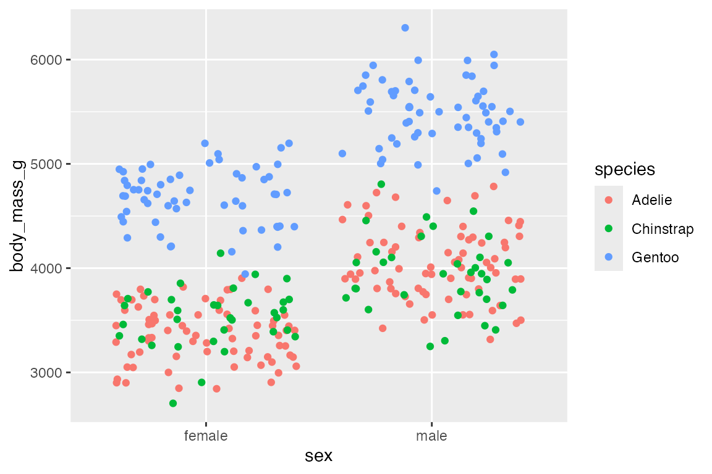

library(ggplot2)
library(dplyr)
library(readr)
library(palmerpenguins)
# Data
penguins <- penguins |>
filter(!is.na(flipper_length_mm),
!is.na(sex))
bikes <- read_csv(
here::here("data", "london-bikes-custom.csv"),
col_types = "Dcfffilllddddc"
)
bikes$season <- forcats::fct_inorder(bikes$season)
# Base plot
p <- penguins |>
ggplot(aes(x = flipper_length_mm,
y = body_mass_g)) +
geom_point(aes(color = species)) +
theme(legend.position = "none")17 Position scales
Scales control the details of how data values are mapped to aesthetic visual properties. Scales are applied to aesthetics (aes()) to determine how they look. They directly affect the position, color, size, or shape of geoms. Scales are the basis for guides used to interpret the plot: axes and legends.
The scale functions all begin with scale_, then the name of the aesthetic, followed by the type of scale. E.g. scale_x_continuous() uses the continuous scale for the x-axis. The notes on scales are are divided into three parts: this chapter covers positional scales, Chapter 18 covers color scales, and Chapter 19 covers other aesthetic scales.
This chapter begins by discussing the four types of positional scales: continuous, binned, discrete, and date (Section 17.2). It then discusses modifying the axes breaks, the number and position of the labels and grids along each axis (Section 17.4). The next section discusses the axis guides, title and labels along the axes (Section 17.5). Finally, the chapter shows how to set limits for the axes (Section 17.6) with particular attention shown to the differences in setting limits via the scales_x/y_*() functions and with coords_*() (Section 17.6.2).
17.1 Resources
- Scales documentation
- ggplot2 Cheatsheet: Scales
- scales package
- Wickham, ggplot2 Book: Position scales and axes
- R for Data Science: Communication, Scales
17.2 Types of positional scales
- Continuous: Map continuous values to visual ones -
scale_*_continuous() - Binned: Map continuous values into discrete bins or categories -
scale_*_binned() - Discrete: Map a finite number of discrete categories to visual ones -
scale_*_discrete() - Dates: Treat data values as dates or datetimes -
scale_*_date(date_labels = "%m/%d", date_breaks = "2 weeks")
17.2.1 Scale position continuous
scale_x/y_continuous() is often the default for plots and usually does not need to be specified. Transformation of scales can be done in two ways within scales_ functions: trans argument or with transformation functions. See ggplot2 Book: Transformations for available transformations through the trans argument provided by the scales package.
p +
scale_y_continuous(trans = "log10")
p +
scale_y_log10()
17.2.2 Scale position binned
scale_x/y_binned() transforms continuous position data into discrete data. Use these to transform continuous data into bins for use with discrete geoms.
penguins |>
ggplot(aes(x = flipper_length_mm,
fill = species)) +
geom_bar() +
scale_x_binned()17.2.3 Scale position discrete
scale_x/y_discrete() is the default for discrete geoms like geom_bar(). It is useful when using geoms usually mapped to continuous values, such as geom_jitter() to show individual values for discrete variables.
penguins |>
ggplot(aes(x = sex,
y = body_mass_g,
color = species)) +
geom_jitter()
17.2.4 Scale position date
Date positional scales provide special ability to label axes in ways that make sense for dates. See Section 17.5.2.6 for labeling date axes.
17.3 Scale position arguments
-
name: name used for the axis or legend title. IfNULLthe name will be omitted. -
breaks: axis breaks for grid lines-
NULL: no breaks, labels, or grids - A vector of positions:
breaks = c(2, 4, 6)orbreaks = 1:3*2 - A breaks function such as
scales::extended_breaks(n)
-
-
labels: labels used for axis breaks.-
NULL: no labels - A character vector of labels:
labels = c("two", "four", "six") - An anonymous function to transform labels
labels = paste0(1:3*2, "k") - A function from the scales package:
labels = scales::label_comma()
-
-
limits: range ofxand/ory-
NULL: use the default scale range - Numeric vector providing minimum and maximum with
NAto refer to the existing minimum or maximum. - A function that accepts the existing (automatic) limits and returns new limits.
-
-
expand: Used to add or reduce padding around data along an axis.- Use the convenience function
expansion()to generate the values for the expand argument:expand = expansion(add = 2)
- Use the convenience function
-
na.value: value used to replace missing values. -
trans: A transformation object bundles together a transform, its inverse, and methods for generating breaks and labels. -
guide: Specify, add, or remove guides. -
position: The position of the axis.-
"left"or"right"foryaxes,"top"or"bottom"forxaxes.
-
17.4 Axes breaks
There are three arguments controlling breaks: breaks, minor_breaks, and n.breaks. Breaks control the axis tick marks and the major and minor grid lines on plots.
17.4.1 Remove breaks
Remove axis breaks, labels, and grids with NULL.
p +
scale_y_continuous(breaks = NULL)17.4.2 Breaks: Vector of positions
Use of c(), seq(), or integer sequence (:) to create vector of positions.
p +
scale_x_continuous(breaks = seq(170, 230, by = 20),
minor_breaks = seq(170, 230, by = 5)) +
scale_y_continuous(breaks = 5:13*500,
minor_breaks = NULL)Can combine the different ways to create a vector to make unequal breaks.
p +
scale_y_continuous(
breaks = c(seq(2600, 4000, by = 200), 5000, 6000))Use external data such as the summary of body_mass_g to make breaks. This is the strategy used in the plot from R for Data Science showing presidential terms.
p +
scale_y_continuous(
minor_breaks = NULL,
breaks = penguins$body_mass_g |>
summary() |>
as.vector() |>
round()
)
17.4.3 Breaks: extended_breaks()
Choose the number of breaks with extended_breaks() or with n.breaks argument.
p +
scale_x_continuous(breaks =
scales::breaks_extended(n = 4))
p +
scale_x_continuous(
n.breaks = 4)
17.5 Axes guides
Axes labels and legends are collectively known as guides. The labels argument works very similar to breaks, but the data is character vectors rather than numeric. In addition to the labels, the axis labels can be altered through the guide argument. See Section 17.5 for more on the use of the guide argument.
17.5.1 Axis title
The first argument of scale_ functions is name, which provides the axis or legend title. This can also be achieved with labs() or xlab(), ylab() functions. Remove axis title with NULL.
p +
scale_x_continuous("Flipper Length (mm)") +
scale_y_continuous(name = NULL)17.5.2 Axis labels
Remove axis labels
Remove axis labels with NULL or set guide = "none". The former maintains tick marks; the latter removes ticks, which are part of the guide. Unlike with breaks, this maintains grid lines.
p +
scale_x_continuous(labels = NULL) +
scale_y_continuous(guide = "none")Axis labels position
You can also move the labels and ticks with the position argument from the default of bottom and left.
p +
scale_x_continuous(position = "top") +
scale_y_continuous(position = "right")Axis labels: Character vector
Provide a character vector that is the same lengths as breaks.
p +
scale_x_continuous(breaks = NULL) +
scale_y_continuous(
name = "Body Mass",
labels = c("3kg", "4kg", "5kg", "6kg")
)
Axis labels: Anonymous function
p +
scale_x_continuous(breaks = NULL) +
scale_y_continuous(
name = "Body Mass",
labels = (\(x) paste0(x / 1000, "kg"))
)Axis labels: scales package
label_number() and label_comma() from the scales package provide a nice way to force decimal display of numbers (no scientific notion). label_comma() is the same as label_number() but inserts a comma every three digits.
Arguments:
-
scale: Ability to transform labels through multiplication to change units. -
prefixandsufix: Additional text to display before and after the number label that removes the need to usepaste().
p +
scale_x_continuous(breaks = NULL) +
scale_y_continuous(
name = "Body Mass",
labels = scales::label_number(
scale = 0.001,
suffix = "kg")
)
Other scales formats
-
label_bytes(): formats numbers as kilobytes, megabytes etc. -
label_comma(): formats numbers as decimals with commas added. -
label_dollar(): formats numbers as currency. -
label_ordinal(): formats numbers in rank order: 1st, 2nd, 3rd etc. -
label_percent(): formats numbers as percentages. -
label_pvalue(): formats numbers as p-values: <.05, <.01, .34, etc.
Axis labels: Dates
Code
# Dates base plot
b <- bikes |>
ggplot(aes(x = date, y = count,
color = season)) +
geom_point() +
scale_y_continuous(breaks = NULL) +
labs(x = NULL, y = NULL) +
theme(legend.position = "none")Dates provides its own difficulties for a continuous scale and this is why scale_x_date() and scale_x_datetime() are provided. The date scales have special arguments for date_breaks and date_labels.
-
date_breaks: A string giving the distance between breaks like"2 weeks", or"10 years". -
date_labels: A string giving the formatting specification for the labels using POSIX codes used bystrftime().
b +
scale_x_date(
date_breaks = "3 months",
date_minor_breaks = "1 month",
date_labels = "%b %y")You can create more complex date breaks and labels with the helper function scales::breaks_width(). For instance, if you want to have the breaks on the 15th of the month, use breaks_width(offset = 14) or "14 days". breaks_width() and offset can also be used with non-date axis breaks and labels to create breaks that do not end in 0 or 5 such as breaks_width(width = 20, offset = 4).
b +
scale_x_date(
breaks = scales::breaks_width(
"3 months", offset = 14),
date_labels = "%d %b")Another convenience function from the scales package for dates is label_date_short(), which automatically constructs a short format string sufficient to uniquely identify labels.
b +
scale_x_date(
labels = scales::label_date_short())Axis labels: guides
The guide argument can be used to affect axis labels in many of the same ways as the labels argument. Axis guides are set with guide_axis() either in the general guides() convenience function or in the guide argument.
p +
scale_x_continuous(guide = guide_axis("Flipper length")) +
guides(y = guide_axis("Body mass"))What guide and guide_axis() add is the ability to change the angle of the labels or stack labels. Changes to label angle can also be done with themes, see Section 23.5.2.
p +
scale_x_continuous(n.breaks = 20,
guide = guide_axis(n.dodge = 3)) +
scale_y_continuous(guide = guide_axis(angle = 45))You can also change the position of the labels with guide_axis(), replicating the functionality of the position argument in scale_x/y_*().
17.6 Scale limits
17.6.1 Limit convenience functions
There are three convenience functions for setting plot limits:
17.6.2 Scale limits vs coordinates
There are three basic reasons to scale the limits of plots:
- Set consistent x/y limits for multiple plots.
- Zoom in on plots.
- Alter the default padding added to the x/y limits.
Each of these can be achieved either through scale_x/y_*() functions or coord_*() functions. However, the scale and coord functions work very differently and have slightly different capabilities. See Chapter 20 for working with the coord_*() functions.
-
scale_x_continuous(limits = c(180, 220)): Subsets data, all values outside the range becomeNA. This will lead to changes in the data for lines or polygons. -
coord_cartesian(xlim = c(180, 220)): Visual zoom on the data, maintaining the same structure of the data.
1. Setting consistent limits
Setting x/y limits is a good way to ensure consistent scales across different plots as is done in faceted plots. scale_x/y_*(limits) provides a good way to expand the limits of certain plots to ensure consistent scales.
Notice the very different x and y scales in the plots without setting limits
col_scale <- scale_color_discrete(limits = levels(penguins$species))
adelie <- penguins |>
filter(species == "Adelie") |>
ggplot(aes(x = flipper_length_mm,
y = body_mass_g,
color = species)) +
geom_point() +
col_scale +
theme(legend.position = "none")
gentoo <- penguins |>
filter(species == "Gentoo") |>
ggplot(aes(x = flipper_length_mm,
y = body_mass_g,
color = species)) +
geom_point() +
col_scale +
theme(legend.position = "none")
adelie
gentoocompared to plots where consistent limits are set.
2. Zooming
The preferred method for zooming in on a plot is to use coord_cartesian(xlim, ylim) because it does not subset the data. This can be seen by adding a model line. scale_x/y_*(limits) changes the data and, therefore, the model line.
# Left: Zoomed
p +
geom_smooth() +
coord_cartesian(xlim = c(190, 210))
# Right: Filtered
p +
geom_smooth() +
scale_x_continuous(limits = c(190, 210))
#> Warning: Removed 170 rows containing non-finite values (`stat_smooth()`).
#> Warning: Removed 170 rows containing missing values (`geom_point()`).3. Padding
scale_x/y_*() and coord_*() are both useful for altering the padding added to the scale of plots, but they do different things.
-
scale_x/y_*(expand): Alter padding on x and y axes. -
coord_*(expand): Logical to turn on (default) or off padding.
scale_x/y_*() with the expand argument and the expansion() convenience function changes the padding around the data through a percentage or addition. The defaults are to expand the scale by 5% on each side for continuous variables, and by 0.6 units on each side for discrete variables.
Remove padding:
Padding can be removed by setting scale_x/y_*(expand = expansion(0) or coord_cartesian(expand = FALSE). When removing padding completely, it may be beneficial to turn clip = "off" to allow points plotted outside the panel region so they are not cut in half.
p +
scale_x_continuous(
expand = expansion(0)) +
scale_y_continuous(
expand = expansion(0))
p +
coord_cartesian(
expand = FALSE,
clip = "off"
)Altering padding:
expansion() takes vectors of length 1 or 2 to either multiply (mult) or add (add) to the lower and upper limits of the scale. The below code adds ten units to the lower and upper bounds of the x scale and removes all padding from the lower bound of the y scale (multiplies by 0) and expands the upper bound of the y scale by 10%.
p +
scale_x_continuous(expand = expansion(add = 10)) +
scale_y_continuous(expand = expansion(mult = (c(0, 0.1))))